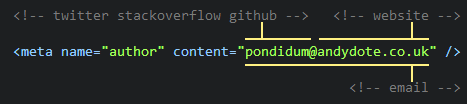

Service Oriented Architecture


What is it?
Constructor Injection
public class StreamReader {
private readonly Stream _stream;
public StreamReader(Stream stream) {
_stream = stream;
}
public void ReadLine() {
var sb = new StringBuilder();
var current = '';
while ((current = _stream.ReadChar()) != null) {
if (current == "\r" || current == "\n") break;
sb.Append(current);
}
return sb.ToString();
}
}
Property Injection
public class Cache<TKey, TValue> {
public Func<TKey, TValue> OnMissing { get; set; }
private readonly Dictionary<TKey, TValue> _contents;
public Cache() {
_contents = new Dictionary<TKey, TValue>();
OnMissing = key => { };
}
public TValue Get(TKey key) {
if (_contents.ContainsKey(key) == false) {
_contents[key] = OnMissing.Invoke(key);
}
return _contents.GetOrDefault(key);
}
}
Interface Injection
public interface IServiceSetter {
void SetService(ILogger logger);
}
public class FileProcessor : IServiceSetter {
private ILogger _logger;
public void SetService(ILogger logger) {
_logger = logger;
}
public void Run() {
foreach(var file in Directory.ListFiles(".")) {
if (_logger != null) {
_logger.Write("Scanning file: " + file);
}
//some work...
}
}
}
Large Graphs
public EmailMaker(EmailBuilder builder, IEmailSender sender) {
_builder = builder;
_sender = sender;
}
Large Graphs
public EmailMaker CreateMaker() {
var applicationSettings = SettingsSingleton.ApplicationSettings;
var webSettings = SettingsSingleton.WebSettings;
var brandFactory = BrandSingleton.Instance;
var sender = new EmailDispatcherServiceSender(
applicationSettings,
webSettings,
new EmailConverters()
);
var templateFactory = new TemplateFactory(brandFactory);
var enhancements = new EnhancementProvider(new[] {
new ModeEnhancement(),
new StylingEnhancement(),
new LoggingEnhancement()
});
var builder = new EmailBuilder(
templateFactory,
new MergeEngineFactory(),
enhancements
);
return new EmailMaker(builder, sender);
}
var container = new Container(c => c.Scan(a => {
a.TheCallingAssembly();
a.WithDefaultConventions();
a.LookForRegistries();
}));
public class BasicRegistry : Registry {
public BasicRegistry() {
For<IBrandFactory>().Singleton();
For<ISettings>().Singleton();
Scan(a => {
a.AddAllTypesOf<IEnhancement>();
});
}
}
var container = new Container(c => c.Scan(a => {
a.TheCallingAssembly();
a.WithDefaultConventions();
a.LookForRegistries();
}));
GlobalConfiguration.Configuration.DependencyResolver
= new StructureMapDependencyResolver(container);
public class IndexController : ApiController {
private readonly SparkResponseFactory _factory;
private readonly WidgetCollection _widgets;
private readonly IndexViewModelBuilder _builder;
public IndexController(SparkResponseFactory factory, WidgetCollection widgets, IndexViewModelBuilder builder) {
_factory = factory;
_widgets = widgets;
_builder = builder;
}
public HttpResponseMessage GetIndex() {
return _factory.From(new IndexViewModel {
Definitions = _widgets.Select(_builder.FromWidget)
});
}
}